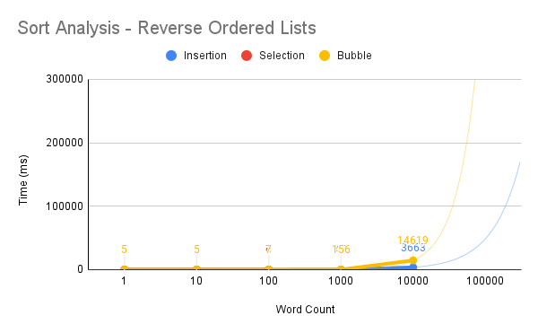
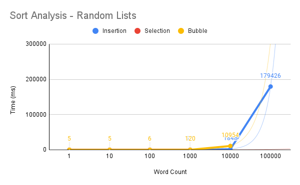

The graph above is displaying the time taken for different sorting algorithms to sort through different numbers of already-sorted words. The bubble sorting algorithm took the longest, at an average of 251,677 milliseconds (about 4 minutes, 11 seconds) to sort through 100,000 words. The selection sorting algorithm couldn't complete a sort of 100,000 already-sorted words, but you can see the prediction of time with the thin red line on the graph. The insertion algorithm was able to complete a sort through 100,000 sorted words in about 55 seconds, on average. The difference in time is likely because insertion sort iterates over the array one time and makes changes as it goes, whereas bubble sort and selection sort both iterate over the array multiple times.
The graph shown above is how long it took algorithms to sort through a reverse-ordered list of words. None of the algorithms were able to complete the full 100,000 words, because the run time was limited to about 5 minutes by the shell, however, the prediction lines are shown in the graph. The algorithms struggled sorting through this list more than the ordered list because this list is the exact opposite of what it needs to be, meaning the algorithm has more it needs to do. The selection algorithm did not work on the larger lists which is why the red line can be hard to see in the graph. The bubble sort took a few seconds longer than the insertion sort did to sort through 10,000 words, but it was not as big a difference as I would expect, mostly because bubble sort would have to iterate over the array significantly more times than insertion would.
This graph is displaying the test data for sorting through lists of random words. Sorting through the random lists should be easier on the algorithm than a completely reversed list, because there is likely going to be fewer swaps required to get words into the right place, whereas the exact reversed list is going to have to do a lot more swaps to get it back in order. My hypothesis was proven correct by these tests because my insertion sort was able to complete the sort of a list of 100,000 words in about 3 minutes, compared to not even being able to finish the reversed list. Bubble sort was not able to complete the tests of the full 100,000 words, but you can see that the time to sort 10,000 words was slightly lower than it was for 10,000 random words. It is only lower by about 4 seconds, and this is likely because bubble sort still iterates over the entire array multiple times, and the random list would still require lots of swaps.
By: Layne Yarbrough, Shivanshi Das, Srisaivikas Munagala, and Kripa Tailor